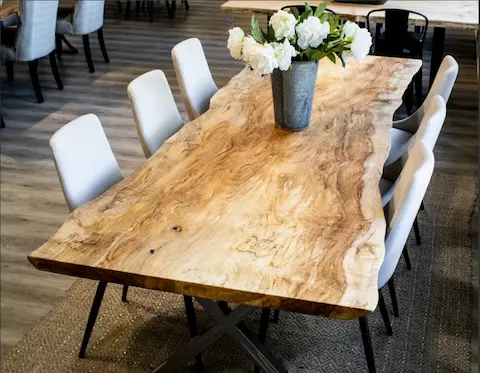
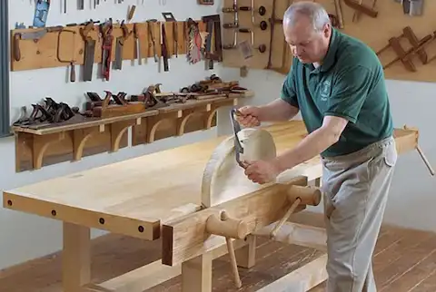
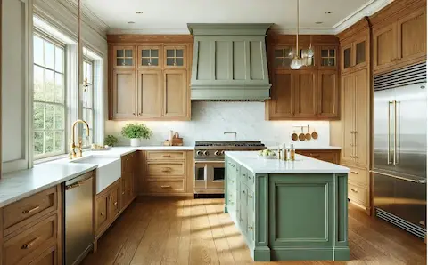
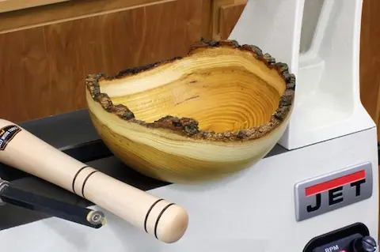
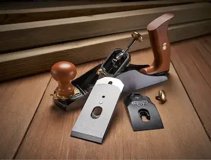

Furniture
White Oak Dining Table
A 7-foot live-edge slab table with hand-cut mortise and tenon joinery. Finished with Danish oil.
Local Woodworking Community
The Wood Guild is a community for woodworkers of every level — from the first time you pick up a chisel to the day you finish your masterpiece. Browse projects, learn about tools, and find the best places to buy materials near you.

Member Builds
Real work from members of the Guild — every piece tells a story of patience, material, and skill.

A 7-foot live-edge slab table with hand-cut mortise and tenon joinery. Finished with Danish oil.

Shaker-style cabinet in black walnut. Soft-close hinges, inset doors, and hand-planed faces.

Lathe-turned cherry bowl with a natural edge. Tung oil finish that deepens the figure in the wood.

Essential Hand Tools
The No. 4 smoothing plane is the workhorse of hand-tool woodworking. It flattens, smooths, and trues surfaces to a finish no sandpaper can match — leaving a burnished, light-catching face that brings out the full character of the wood.
| Category | Hand Planes · Smoothing |
|---|---|
| Skill Level | Intermediate |
| Blade Width | 2 inches (50 mm) |
| Best For | Final smoothing, grain tearout |
Where to Buy
Trusted local and online sources for lumber, tools, and finishing materials recommended by Guild members.
Family-owned since 1954 with 35+ locations nationwide. Tools, hardware, lumber, and hands-on woodworking classes for all skill levels.
View Details →Atlanta's historic woodworking store since 1978. Home of the legendary Wood Slicer bandsaw blade, expert staff, and personalized classes.
View Details →Family-run online lumber supplier specializing in domestic hardwoods, exotic species, and figured wood — carefully graded and shipped nationwide.
View Details →